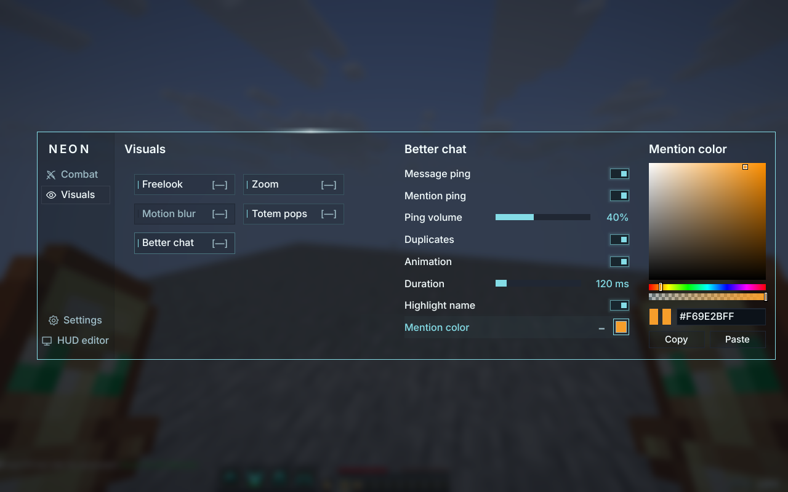

Approved compact module grid
Compact physical default: 582 × 370 px. Native Inter at 16 px body, 15 px secondary, 19 px headings. The 12 November color revamp uses near-black graphite surfaces, subtle breathing cyan/violet surface light and soft row hover lighting, retaining the same animated outline and localized traveling bloom, quiet gray navigation and a right-hand settings drawer. The enlarged concept below establishes the visual direction; packaged-client captures establish runtime appearance.
Visuals
All module buttons have the same compact width, with a 34-pixel height and roughly 13-pixel gaps. Left click toggles; right click opens or closes the right-hand drawer. Left click the bracketed bind to assign it; right click cycles Toggle, Hold, Reverse hold. Bracketed binds align to the right edge; hovering the bind replaces its key with the full current mode inside the same brackets ([Hold], [Toggle], [Reverse hold]), restoring the key on pointer leave. There is no floating mode tooltip. Module and Settings grid buttons have no +/− marks or persistent mode indicators. Both panes share a continuous surface without an internal vertical divider. The outline expands around both panes as one pixel-aligned mesh over 340 ms, reverses from its current size, and keeps the highlight at its existing physical edge position while it travels at a constant speed. Hover gently lifts by two pixels with a broad, saturated violet Gaussian bloom, a cool cyan left shoulder and a matching purple border and surface tint. The glow and lift fade smoothly over 220 ms. Settings and the direct HUD editor action stack at the sidebar bottom on every category; the Visuals footer is removed. Button fills are 18% at rest and 28% on hover or selection, multiplied by theme alpha and menu opacity. The sidebar, Colors, Appearance, Profiles, header dragging, invisible corner resizing, Escape, Ctrl+Z and smooth wheel scrolling remain available.
The shared settings drawer targets 300 logical units (about 397 display pixels). Inline slider bars retain at least 90 logical units; smaller displays put label and value above a full-width bar. Solid fills have no end indicator and ease over 120 ms. Ordinary dragging follows the pointer directly, including after leaving and re-entering the track. Settings uses the same spaced, equal-width outlined button grid for Colors, Appearance and Profiles, opening their controls in the shared right-hand drawer while keeping the grid visible. Either mouse button opens/closes a section; settings buttons have no enable indicator or bind. Escape closes the drawer, scrolling is remembered per section, and colors expand into an attached drawer inside the same animated outline; on narrow displays they temporarily replace the settings pane.
The HUD editor uses Unity's compact translucent column: a 157/255 background multiplied by Colors opacity, light translucent row overlays, full-width rows and consistent +/− expansion symbols. Numeric rows show label and value together; left-drag the whole row to adjust, or right-click for exact inline input. Keep its border quiet and static, and the world sharp and undimmed.
The latest color-editor update replaces the floating popup with an attached right-hand drawer. It uses the same reversible 340 ms expansion, continuous graphite surface, native Inter title and shared traveling outline as module settings. Follow the latest compact reference: a 222-display-pixel drawer with a full-width 190-pixel saturation/brightness square at default height, closely stacked hue/opacity strips, tiny Original/Current preview chips beside editable RGBA hex, and a compact light-glass Copy/Paste/Sync row. Preserve the saved Vanilla palette and alpha. Color changes apply live. Escape or an outside click closes only the color drawer and keeps changes. The settings pane and its scroll remain intact; on narrow displays the editor temporarily uses its space. The shared header moves the whole menu. All color actions fit at the minimum height.

The user-requested FPS widget joins Armor and Totems in the HUD column. Copy Unity's frame timer and optional Smooth FPS number easing, with Scale, Background, Border and Shadow inline. Use Minecraft's active default font so resource-pack changes apply live, a stationary FPS label/value with four-digit space measured from the active font, a one-pixel optional border, and existing Neon theme colors. Default to enabled at bottom right, shadow on and smoothing/background/border off; retain direct canvas dragging, invisible-corner sizing, Undo and profile persistence. FPS now has Label color, Value color, Background color and Border color rows in that same HUD fold. Each follows the saved theme until edited; Sync restores its theme link. Open the compact shared picker as an attached drawer inside the HUD column with one quiet static border, without changing the menu palette.
Premium interactions preserve this layout: presses settle the hover lift and tighten its glow in 50 ms, releasing in 100 ms, with fixed hitboxes and immediate actions. UI-only critically damped motion retains position and velocity on reversal. Content crossfades over 120 ms within the stable shell. Closing releases gameplay immediately and fades render-only menu commands for 80 ms. Native movement, diagonal resize and horizontal adjustment cursors follow actual header, invisible corner, enabled HUD and slider targets. Copy and profile Save/Update show Copied/Saved for 900 ms after success, then return over 120 ms within the same button geometry. No extra press sounds or settings are added.